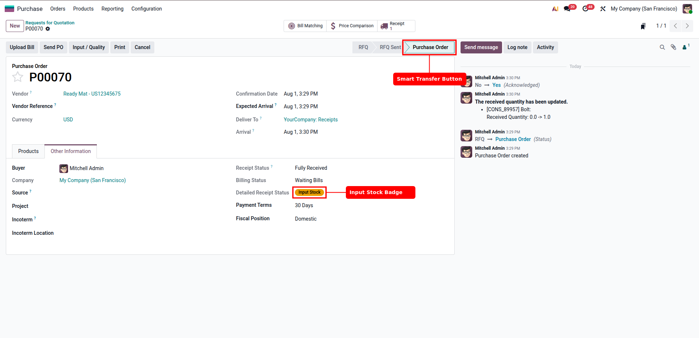
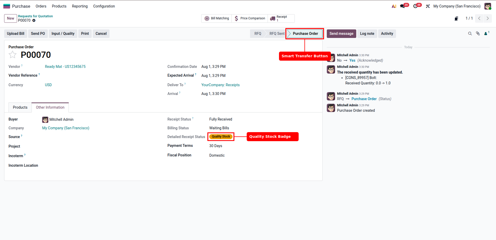
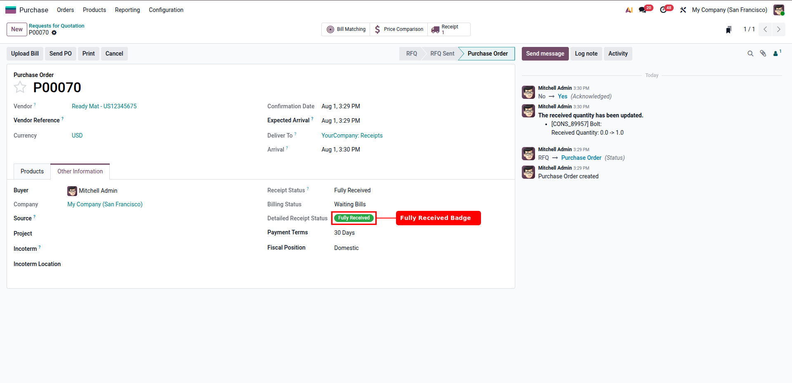

By default, Odoo only tracks the billing status on Purchase Orders. This module completes the puzzle by tracking physical goods receipt status across 1-step, 2-step, and 3-step receiving configurations. It adds a detailed receipt status field, interactive badges, direct shortcut links, and custom filters to save warehouse managers time.
Instantly see states like Waiting, Input Stock, Quality Stock, Partially Received, Overdue, and Fully Received on POs.
A dynamic Input / Quality button appears on the PO, allowing users to jump directly to the pending internal transfer in one click.
Filter Purchase Orders by receipt status effortlessly to find delayed orders or identify pending quality control tasks.
When goods arrive at the input bay under multi-step receiving, the status automatically updates to Input Stock. A smart action button is displayed to move to the next step.

If the workflow requires quality checks (3-step receiving), the status updates to Quality Stock once items are received at the inspection zone.

Once the internal transfers are fully validated, the status instantly updates to Fully Received.

Feel free to contact us if you need help installing the module, setting up custom receiving routes, or modifying features.
Browse More Modules